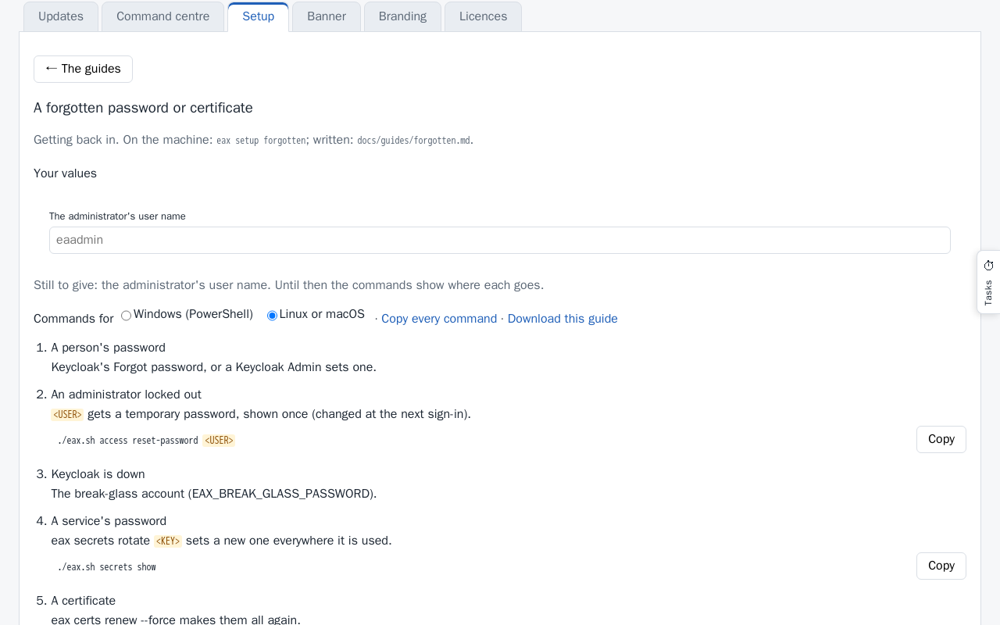

Reset an administrator's password
For: System Admin
A temporary password, shown once, changed at the next sign-in.

#/admin/setupWhy do this
When an administrator is locked out, a temporary password set from the machine gets them back in; they must change it at once.
Access in EA Explorer is layered so each owner decides for their own part: System Admins for the installation, Model Admins for models, Project Admins for projects. Most people need only a few roles to do their work.
In TOGAF terms: The Preliminary phase's architecture capability: who does architecture work and with what authority. Sign-in itself is outside the method. See EA Explorer and the TOGAF Standard.
The goal: An administrator who forgot their password can sign in again.
Before you start You need to run commands on the machine.
Steps
- On the machine:
eax access reset-password <user name>. - Give them the temporary password safely.
- They choose a new one when they sign in.